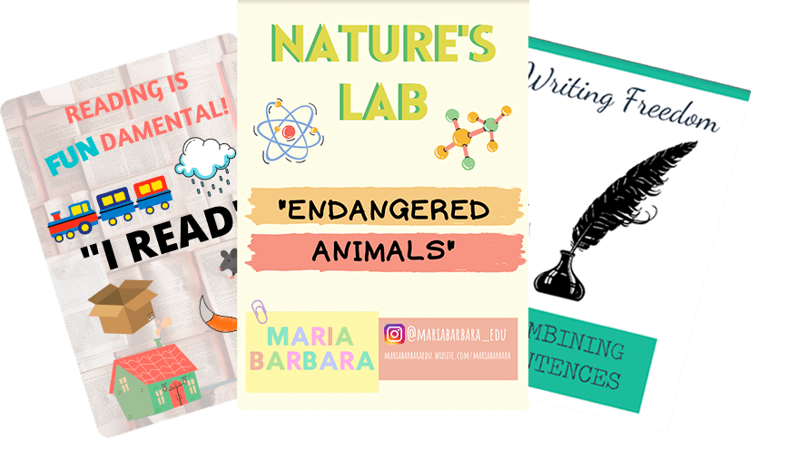
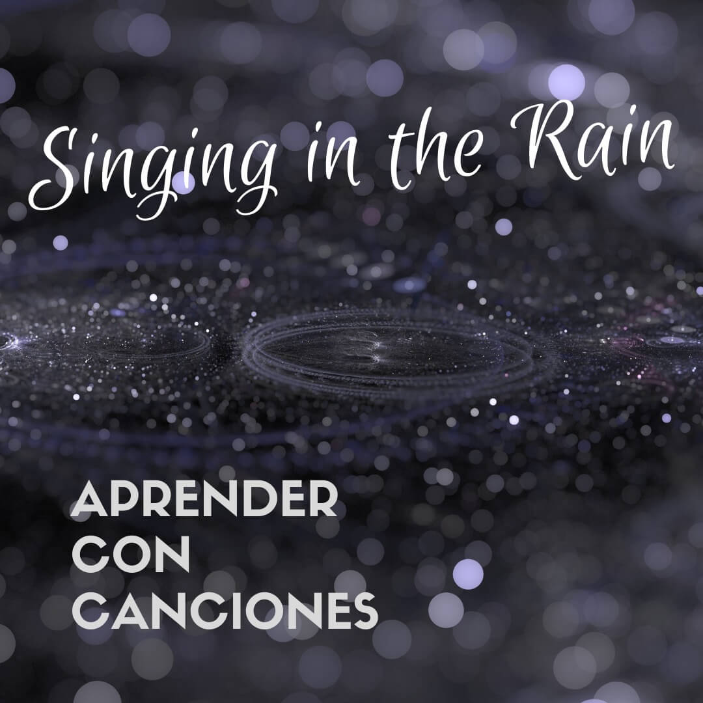
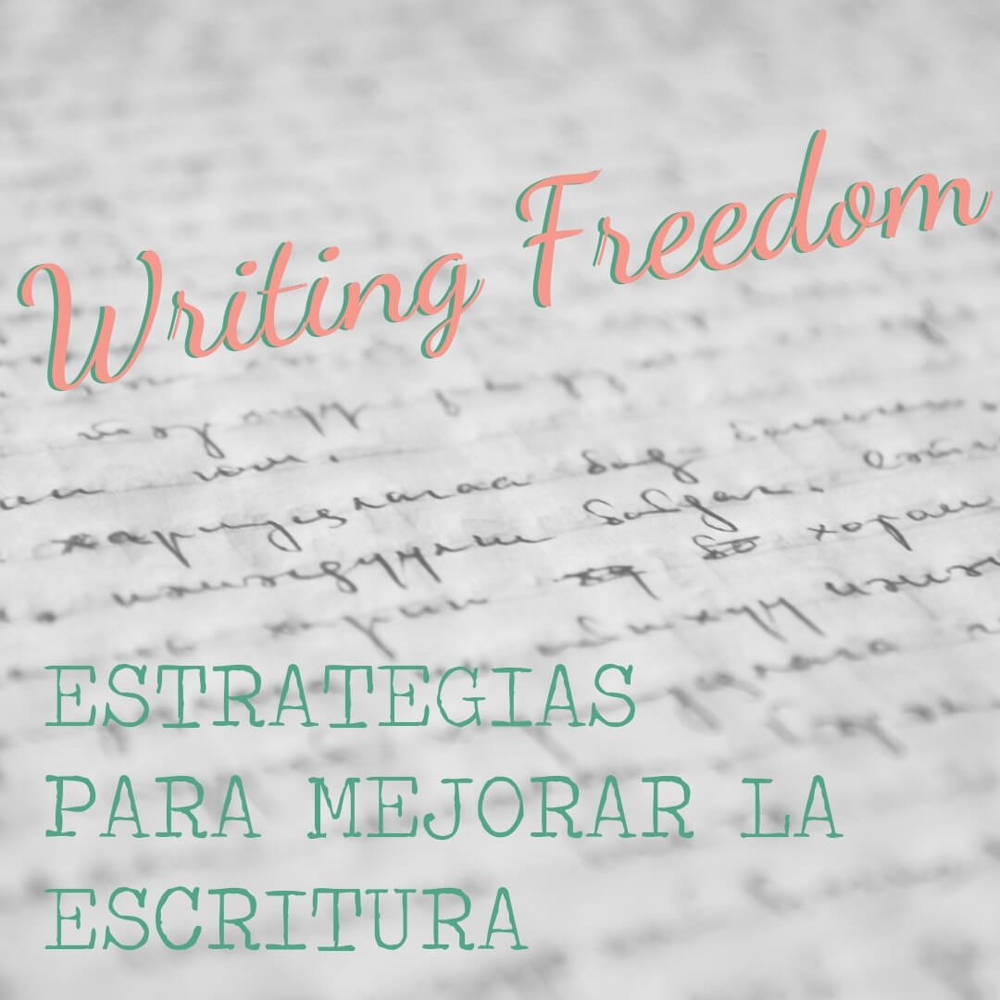

Recursos
Nuestros Recursos
-

Crazy Lonely Worksheets
Sabemos lo difícil que es estar al día con todas las clases que tenemos que armar y conseguir material sobre los diversos temas que se trabajan en el aula. Para estos días, les recomendamos que busquen en nuestra selección de “Crazy lonely worksheets”. Tenemos hojas de actividades diversas, sobre diferentes temas y prácticas de lenguaje.
-
Discovering
Actividades para desarrollar la lectura crítica en inglés mientras se analiza la vida de personas que han impactado positivamente nuestro mundo.
-
Unwhitening
Imágenes y doodles hechos a mano para colorear.
-
Movix & Chill
Guía de actividades en inglés para aprender diversos temas viendo películas o series, favoreciendo la escucha crítica en esa lengua y dar puntapié para trabajar contenidos específicos.
-
Nature's Lab
Actividades para que tus alumnos aprendan a través de la experimentación en las ciencias naturales.
-
Pimp My Classroom
Posters e imprimibles para que el aula sea un entorno educativo en el que se favorezca el intercambio de enseñanza y aprendizaje.
-
Reading Is Fundamental
Actividades para desarrollar lectura crítica en inglés.
-

Singing In The Rain
Guía de actividades en inglés para aprender diversos temas con canciones, favoreciendo la escucha y/o lectura en esa lengua y dar puntapié para trabajar contenidos específicos.
-

Writing Freedom
Actividades y guías para mejorar la escritura académica.